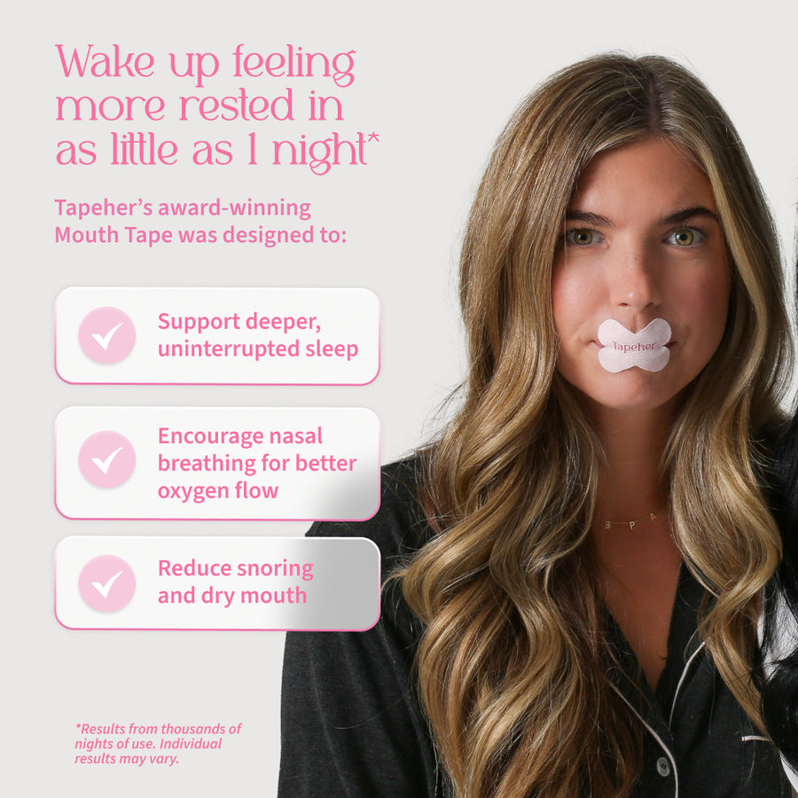
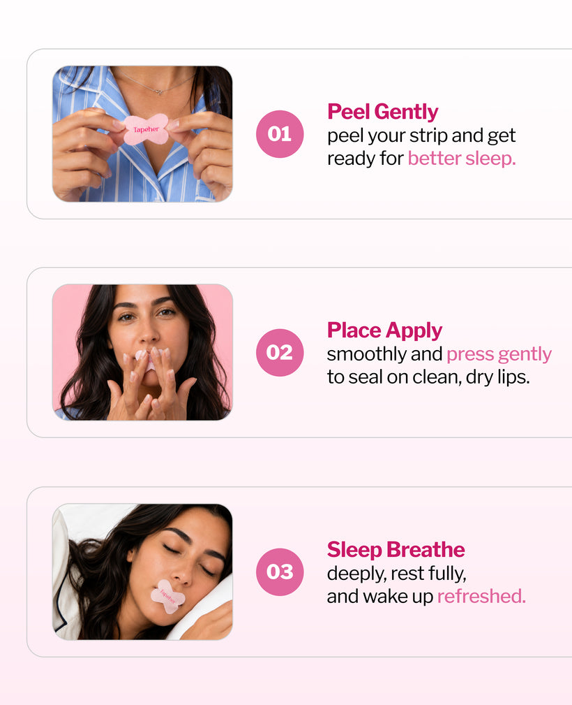
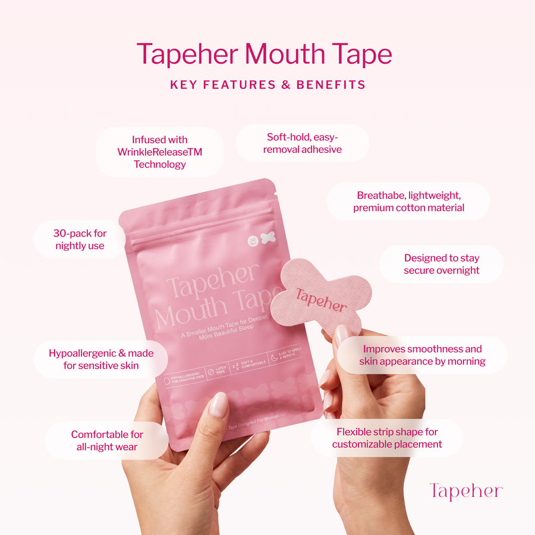

How the 5 mouth tapes compared
We judged each one on the things that actually matter night to night: how it feels on the skin, what it's made of, and how it comes off in the morning. Here's how they stacked up.
| Criteria | WinnerTapeHer | SomniFix | Hostage Tape | Dryft Sleep | Myotape |
|---|---|---|---|---|---|
| Gentle on skin | ✓ | ~ | ✗ | ~ | ✓ |
| PFAS-free | ✓ | ~ | ~ | ~ | ~ |
| Easy removal | ✓ | ✓ | ✗ | ~ | ✓ |
| Good for sensitive skin | ✓ | ~ | ✗ | ~ | ✓ |
| Designed for smaller faces | ✓ | ✗ | ✗ | ✗ | ~ |
| Price feel | Mid | Mid | Higher | Mid | Mid |
| — | Check price → | — | — | — | — |
✓ strong · ~ okay/unclear · ✗ weaker. Ratings reflect our own hands-on testing and publicly available product info. Tip: swipe the table sideways on mobile.
#1 — TapeHer: I taped my mouth for 14 nights

I'll be honest — the first night felt strange. You go to bed with a small strip across your lips and your brain insists this is a terrible idea. By night three, I stopped noticing it. By the end of two weeks, it had quietly become part of my wind-down routine.
What sold me on TapeHer specifically was the adhesive. I have reactive skin and I've had bad experiences with strong tapes that leave a red outline in the morning. This one was different — it held all night but the adhesive stayed gentle. Peeling it off felt closer to removing a soft sticker than ripping off a bandage. It also sits well on a smaller mouth; a lot of mouth tapes feel like they were sized for a much bigger face.
The thing I actually noticed: less of that dried-out, cottony mouth feeling I'd wake up with. Many people find nasal breathing more comfortable through the night, and that lined up with my experience. It won't turn anyone into a perfect sleeper, but it nudged things in a good direction.
- Gentle on the skin — no red mark in the morning
- Peels off without that "rip" feeling
- Sits well on smaller faces — clearly made with women in mind
- PFAS-free, which mattered to me for something on my skin nightly
- Woke up with less dry mouth; nasal breathing felt easier
- Takes a few nights to get used to the sensation
- Not the right choice if your nose is badly congested
- It supports a habit — it isn't a magic fix on its own
Opens tapeher.com · Made for women · PFAS-free
The other four, briefly
#2 — SomniFix
A well-known strip with a small breathing vent in the middle, which some first-timers like as a reassurance valve. It's comfortable and removes cleanly.
vs TapeHer: the one-size shape can feel large on smaller faces, and it leans less explicitly toward sensitive-skin and women-first design.
#3 — Hostage Tape
The heavy-duty option, marketed at people who want a tape that absolutely will not budge overnight. It delivers on hold.
vs TapeHer: that aggressive grip is the trade-off — the strong adhesive can feel harsh and tug at delicate skin, which is exactly what sensitive-skin users want to avoid.
#4 — Dryft Sleep
A solid, no-frills mouth strip at a reasonable price. Perfectly fine if you just want a straightforward tape.
vs TapeHer: removal was a bit more "stick-and-tug" for us, and there's less of a sensitive-skin focus or smaller-face sizing.
#5 — Myotape
Different by design — instead of covering the lips, it loops around the mouth to gently draw the lips together while leaving the center open. Gentle on skin and easy to remove.
vs TapeHer: the around-the-mouth format feels unusual to newcomers and takes more fiddling to position, where a simple centered strip is more intuitive.
How to use mouth tape (3 steps)

- Clean & dry your lips. Wipe away any balm, oil, or moisturizer first — tape sticks best to clean, dry skin.
- Apply a small strip centered on closed lips. Relax your mouth, place the strip across the middle of your closed lips, and press gently for a few seconds.
- Peel off gently in the morning. Remove slowly from one side. If skin feels tight, a little warm water loosens the adhesive.
New to it? Try it during a short daytime rest first to get comfortable, then move to overnight.
Frequently asked questions
Does mouth taping hurt?
It shouldn't. With a gentle, skin-safe adhesive like TapeHer's, most people feel light pressure and nothing more. Removal is the part people worry about most — peeling slowly, and using a tape designed for sensitive skin, makes a big difference. If a tape stings or leaves a red mark, it's too aggressive for you.
Can I use it every night?
Many people do use it nightly once they're comfortable, but start gradually — a few nights to get used to the sensation is normal. Listen to your body, keep your lips moisturized during the day, and skip nights when you're congested or unwell.
Does mouth taping really help your jawline?
You'll see this claim a lot online, and we'd be cautious about it. There isn't solid evidence that mouth tape reshapes your jaw, and we won't pretend otherwise. What people more commonly report is encouraging nasal breathing and waking up with less dry mouth. Treat jawline claims as marketing, not fact.
How is mouth tape different from nose strips?
They do different jobs. Nose strips sit on the outside of your nose to help open the nasal passages so air flows more easily. Mouth tape gently keeps your lips closed so you're more likely to breathe through your nose. Some people use both together — open the nose, encourage the nose to do the work.
Is it safe for sensitive skin?
That's exactly where a gentle, PFAS-free option like TapeHer is meant to shine — it's formulated to hold without harsh tugging. That said, everyone's skin is different. Do a small patch test first, and stop if you notice irritation. If you have a known adhesive allergy or very reactive skin, check with a professional before regular use.

Our pick after 14 nights: TapeHer
If you want a mouth tape that's gentle on the skin, easy to peel off, and actually designed with women and sensitive skin in mind, this is the one we'd start with.
PFAS-free · Skin-safe adhesive · Easy peel-off